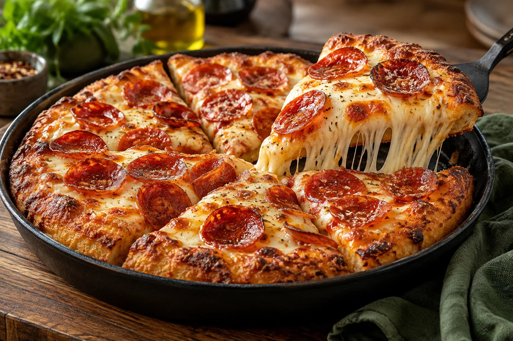

A little comfort.
A lot of flavor.
Pull up a chair. These are Corey’s favorites, from cozy one-pot dinners to the sauces worth licking the spoon for.
Find something delicious ↗
A whole lot of love.
comfort
collection
EST. 2026
Recipe of the Day
A fresh pick from Corey’s recipe box, every day.
Your meal calendar
A little inspiration for every evening. Open a recipe to cook, or edit any day to make it your own.
Shopping, printing & planner options
Loading your recipe choices…
Review recipe ingredients before adding to your list
Recipe ingredients
Amounts follow each day’s selected recipe. Choose a serving amount or a batch multiplier above. Ingredients scale from the stated original yield; ranges use their upper end. Repeated ingredients stay listed under each meal so you can add quantities accurately. Side dishes and notes are not automatically added; enter them above.
What sounds good?
Something for every craving.
And every seat at the table.
Nothing in this corner of the kitchen yet.
Try another ingredient or category, or save a few favorites.
Good food is better shared.
Keep your favorites close. Make a little for yourself, or pull out a few extra plates. There’s always room at Corey’s table.